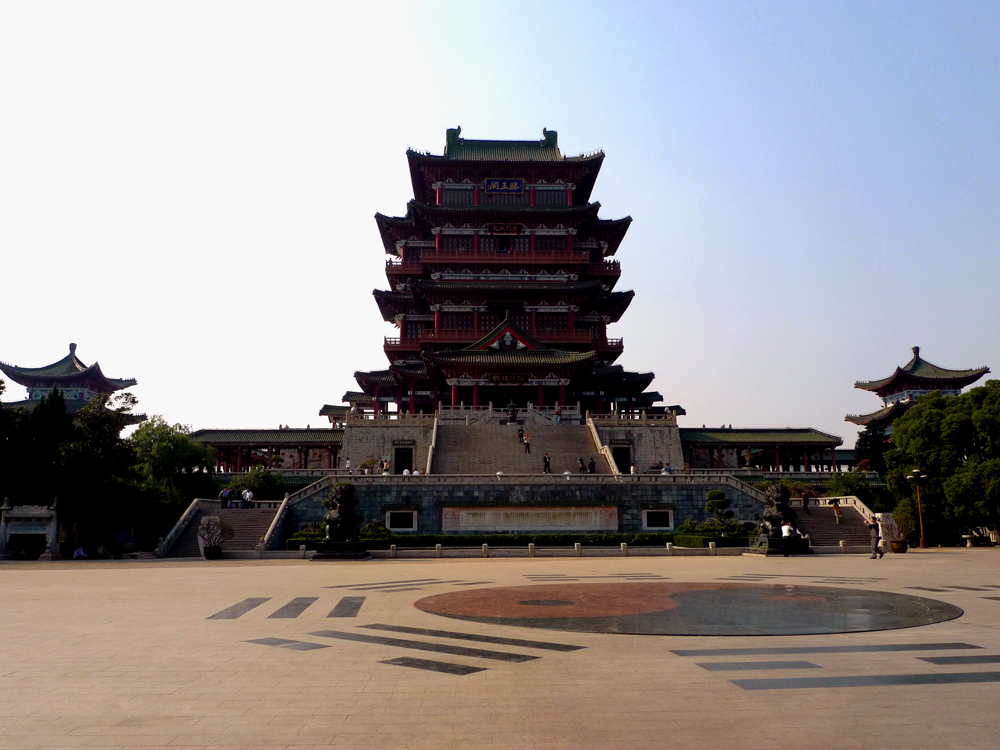
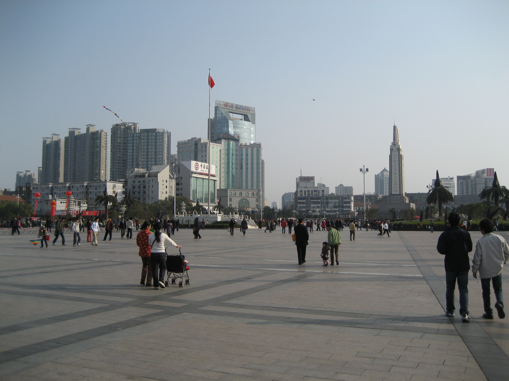
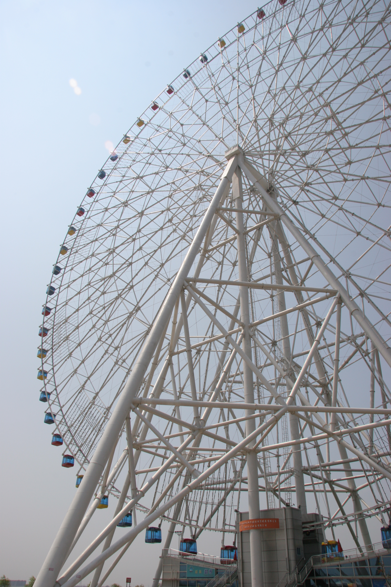
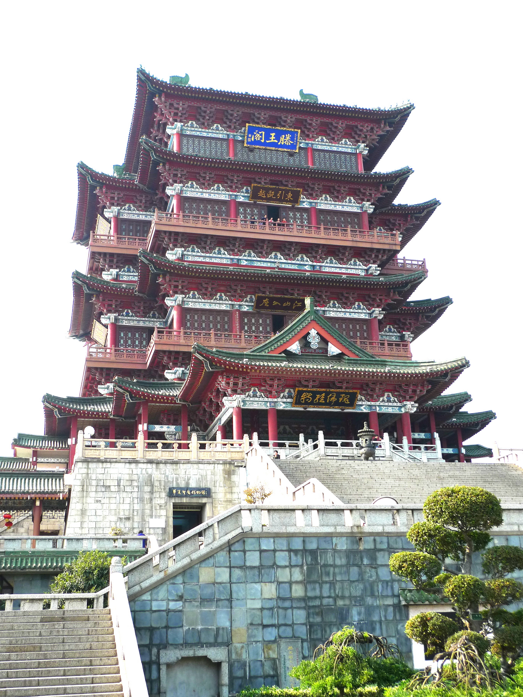

交通方案
出发与碰头 — G225次
| 出发地 | 车次 | 时间 | 说明 |
|---|---|---|---|
| 苏州 → 虹桥 | G7101 | 7:47 → 8:19 · 32min | 苏州站出发，二等座 ¥35。到虹桥后与闺蜜汇合，40分钟换乘缓冲 |
| 上海虹桥 → 南昌西 | G225 | 9:00 → 11:46 · 2h46min | 二等座 ¥403 · 一等座 ¥645。经杭州东（9:45到/9:48开），中午前到达 |
| 备选（苏州早班） | G7199 | 6:42 → 7:15 · 33min | 苏州北站出发，更早更稳妥，二等座 ¥38。到虹桥后有充裕时间吃早饭 |
💡
碰头方案 — 闺蜜从苏州站坐 G7101（7:47-8:19）到虹桥站，在虹桥站内与上海出发的姐妹汇合，一起乘 G225（9:00 发车）。建议提前在 12306 买好往返票，6月虽非大旺季但周末票也会紧张。
🔁
返程（Day 3） — 推荐 G238 南昌西 15:33 → 虹桥 18:22（2h49min），二等座 ¥371。闺蜜到虹桥后再换乘高铁回苏州（约 30min，¥35~46）。备选 G1378（15:38→19:20）或更晚的 G1372（16:22→19:44）。

🏯 滕王阁 · 落霞与孤鹜齐飞

🌉 赣江两岸 · 一江两岸天际线

🎡 南昌之星摩天轮 · 世界第三高
Day 1 · 6/19 周五
抵达 + 老城烟火 + 滕王阁夜景

🏯 滕王阁夜景 · 19:00亮灯，赣江倒影绝美
| 时间 | 行程 | 备注 |
|---|---|---|
| 9:00 | 虹桥站出发 → G225 高铁上聊天补觉 | 🚄 2h46min |
| 11:46 | 到达南昌西站，打车/地铁去酒店（约30~40min） | 🚇 地铁2号线 |
| 12:30 | 酒店办入住，放行李，休息片刻 | 🛏 轻松开局 |
| 13:30 | 🍜 珠宝街/万寿宫逛吃 — 白糖糕 ¥1、油条包麻糍、糊羹。江西鲲茶（瓦罐奶茶）打卡 | 📸 老南昌味道 |
| 15:00 | 🏛 八一起义纪念馆（免费，公众号提前预约）— 沉浸式展陈，出口子弹墙超震撼 | 🎫 免费需约 |
| 16:30 | 🏮 万寿宫历史文化街区 — 古风建筑群，文创店+许愿墙，慢慢逛慢慢拍 | 📸 古风出片 |
| 18:30 | 🍜 晚餐 — 万寿宫周边或「老三样」吃地道赣菜（油浸鱼、红烧鸡脚） | 🌶 火辣开吃 |
| 19:30 | 🏯 滕王阁夜场 — 19:00亮灯，夜景超震撼！能背《滕王阁序》免门票 ¥50 | 🌃 全天精华 |
📖
背诵免票攻略： 滕王阁南门游客中心二楼智能背诵亭，每天 9:00-12:00 / 13:00-16:00。全文背诵 6 分钟内完成，60 分通关；段落背诵 2 分钟，80 分通关。截至2025年底已有 22 万人次通关！试试看，省 ¥50 还能发朋友圈 😎
⚠️
关于辣度： 江西菜的辣和四川湖南不一样——是"干辣""硬辣"！点菜一定说"微微微微辣"，别高估自己的耐辣能力。带包纸巾（擦汗用）。